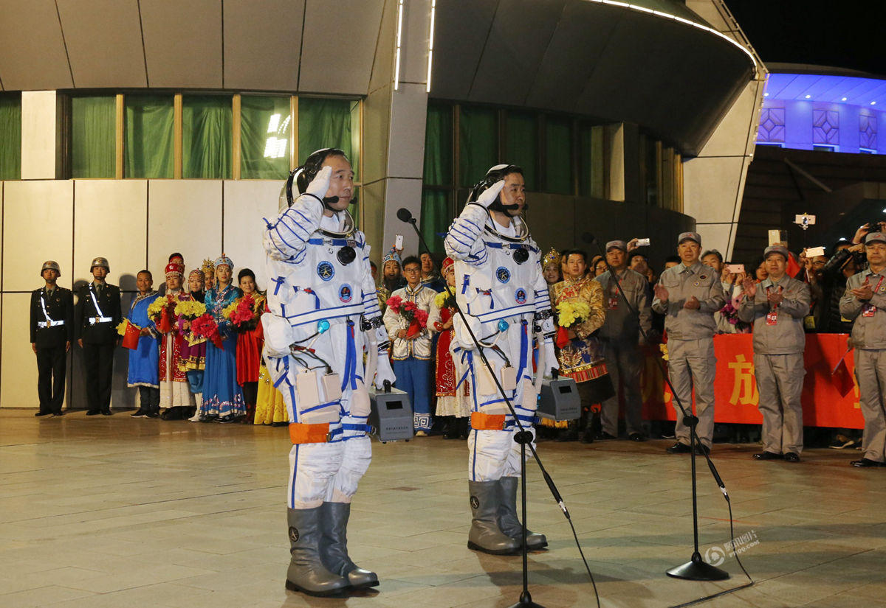

今日新闻
北京
16℃
新闻详情
神舟十一号进入预定轨道 发射圆满成功
时政新闻圈圈网2016年10月17日16:54作者：

我国首次火星探测任务已经中央批准立项。火星探测是我国深空探测继探月工程之后的重要创举，是又一项国家重大标志性工程。为扩大工程的社会影响，树立工程的文化形象，激发全国人民和海外同胞的爱国热情，探月与航天工程中心会同有关部门和单位，组织中国火星探测工程名称和图形标识全球征集活动。2016年8月23日，举行中国火星探测工程征名和图形标识全球征集活动新闻发布会，宣布名称和图形标识全球征集活动正式启动。同时，在新华网、腾讯网、国家航天局网、中国探月与深空探测网、中国火星探测微信平台，开辟火星探测工程专题，介绍火星探测的意义、人类探索火星的历程，我国首次火星探测任务的指导思想、中国火星探测工程名称和图形标识全球征集活动方案等，使参与者了解实施火星探测任务的重大战略意义，激发民众参与征集活动的积极性。发布会参加人员为工程两总、工程总体、工程各系统代表和评委，以及有关新闻媒体和合作企业代表等。